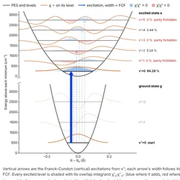
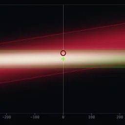
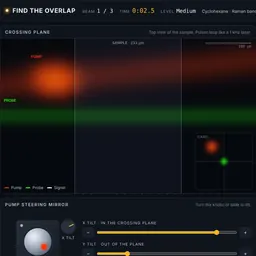
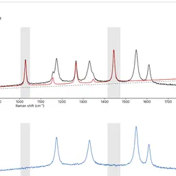

Two harmonic potential energy surfaces. Set ωg, ωe, the displacement and the starting
level v″; the page gives every overlap ⟨χ′|χ″⟩, the Franck–Condon factors and the vibronic stick spectrum,
with the closed form for each row.
Notation from McHale, Molecular Spectroscopy. source

Pump and probe Gaussian beams crossing in a sample. The intensity-weighted overlap fv and the
absolute overlap η for 2PA, transient absorption and 2P-excited TA, with the crossing plane, the beam
cross-section, an overlap map and delay and position scans.
source

Steer the pump with a kinematic mirror and slide the delay stage until the pulses meet in the sample. The
cyclohexane Raman spectrum grows as you get closer; hold 95 % overlap to lock in. Three beams per game and
three levels; hard has 50 fs pulses and small beams.
source
preview to come
Beam overlap as a CD-player style screensaver.
Description and preview to come.

Removes solvent Raman bands from a spectrum, written for FSRS data. Load Igor Pro waves (.ibw, .itx, .pxp) or text, fit the
solvent by a scale factor, a Taylor expansion (shift and broadening) or an exact shift-and-broadening model,
and download the result as an Igor wave.
source